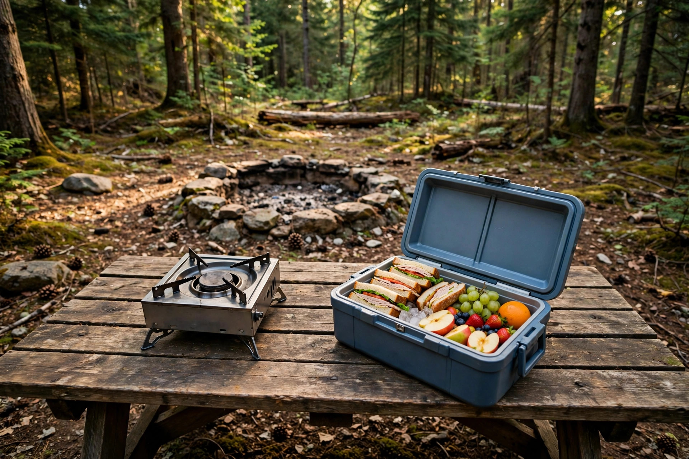

Camp cooking during a fire ban: what is still allowed, and what to eat if it is not

A fire ban announcement usually arrives as a single alarming line — and then the questions start. Is the stove allowed? The barbecue? What happens to a menu planned around a fire? Most advice skips straight to recipes, assuming an answer. That assumption is the risk: bans are written locally, in stages, and the same stove that is welcome under one restriction is prohibited under a stricter one. This guide starts where a trip should start, with reading the actual ban, then matches a menu strategy to each of the three situations a camper can face, and finishes with the cooler discipline and morale details that decide whether a fireless trip still feels like camping.
Step one is reading, not cooking
Two distinctions in the official wording do most of the work. First, Parks Canada draws a line between a fire restriction and a fire ban: a restriction still allows some fire types that a ban would not. Second, national parks sit under standing restrictions of their own — fires are only ever permitted in designated fire pits where the surrounding area has been assessed and cleared, and fires outside those pits are illegal year-round regardless of weather. A provincial ban does not simply copy itself into a national park, and a national park’s rules do not describe the provincial campground down the road. So the procedure is: find the notice for the exact park or land being visited, read which devices it names as allowed and which it names as prohibited, check it again shortly before departure because conditions change during fire season, and when the wording is genuinely unclear, ask park staff rather than guessing. The cost of guessing wrong is not theoretical — Parks Canada notes that burning illegally in a national park can lead to a fine of up to $25,000.
The three situations, and the menu each one wants
Nearly every notice resolves into one of three situations. The table below is the decision framework: identify the row that matches the actual wording, then cook to that row, not to hope.
| Situation | What the wording typically allows | Menu strategy |
|---|---|---|
| 1. Campfires banned, stoves allowed | Gas or propane stoves and barbecues, portable propane fire pits in many parks, lanterns and heaters of the listed types | Cook almost normally on the stove: full hot meals, hot drinks, and skillet desserts. Pack extra fuel, because the stove now does every job the fire did |
| 2. Stricter ban, some flame restricted | Only specifically listed devices, sometimes only in supervised or designated areas; charcoal and wood devices are typically prohibited because they produce embers | Cook only on a device the notice names explicitly. Favour one-pot and quick meals that minimise flame time, and hold a no-cook backup for each day |
| 3. All flame banned | No stove, no barbecue, no candles — nothing that burns | Fully no-cook menu built at home: pre-cooked mains eaten cold, cooler food for the first days, shelf-stable food after that |
Two patterns hold across jurisdictions and are worth treating as near-universal, while still checking locally. Contained stoves with a shutoff valve survive most bans: fire coverage of ban-season cooking notes that most bans do not extend to contained camp stoves, while warning that some sweeping, strict regulations have banned stoves as well — exactly why the local wording governs. And ember-producing devices fail first: charcoal barbecues and wood-burning stoves appear on prohibited lists early and consistently, because embers travel in ways a valved flame does not.
No-cook eating that is actually good
A no-cook menu succeeds or fails at home, days before departure. The backbone strategy in ban-season cooking guidance is pre-cooking: prepare substantial dishes at home, chill or freeze them, and eat them cold at camp, where many hold up far better than expected — grain salads, roasted vegetables, cooked chicken, and sturdy pasta dishes among them. Sequence the cooler honestly across the trip. The first two days carry the fresh food: salads, deli meats, cheese, and pre-made dishes at their best. The middle of the trip transitions to shelf-stable proteins and hard cheeses that shrug off a warming cooler. Longer trips end on dry staples that need nothing cold at all. One honest weakness deserves planning rather than discovery: cold breakfasts are less sustaining than hot ones, so compensate deliberately with extra nutrient-rich snacks through the morning instead of pretending a cold bar equals a cooked breakfast. Small flavour kits — spice blends, sauce packets, seasoning mixes — weigh almost nothing and do disproportionate work against day-three menu fatigue, the point where repetitive cold food stops being a novelty.
The cooler becomes the kitchen
When nothing can be heated, the cooler stops being storage and becomes the appliance the whole menu depends on, and it rewards the same care a stove would get. Pre-chill it before loading — a full day ahead is the recommendation in burn-ban meal guidance — because a warm cooler spends its first ice just cooling its own walls. Freeze water bottles to serve as the ice: campers in a long-running fire-ban meal thread favour them because they keep food out of a meltwater bath as they thaw, and then become drinking water instead of a puddle, which is two jobs from one item. Load in eating order, with day-one food on top, so the lid opens briefly and rarely. Keep the cooler shaded and closed at camp; every long, thoughtful stare into it is paid for in degrees. None of this is glamorous, and all of it is the difference between a day-three dinner that is safely cold and one that gets thrown away while the group pretends trail mix was the plan.
Morale is a menu item
The campfire is not only heat and light; it is the evening’s structure, and its desserts. Ban-season coverage is mostly silent on this, which leaves campers to discover the gap at eight in the evening on night one. Plan the replacement instead. Where stoves are allowed, the evening survives remarkably intact: hot drinks from the stove, and skillet s’mores — the graham, chocolate, and marshmallow combination cooked in a pan over a portable stove — reproduce the ritual closely enough that park staff quoted in fireless-camping coverage recommend portable stoves for exactly this kind of cooking. Campers reporting from real ban trips describe full stove menus — quesadillas, fajitas, chilli, eggs, pancakes — which underlines the point that situation one barely limits dinner at all. Under an all-flame ban, morale moves to food that needs no apology cold: a genuinely good dessert bought or baked at home, hot-drink substitutes forgone without complaint, and an evening activity planned rather than a fire-shaped absence. Bring extra stove fuel whenever a stove is allowed, in every situation; the stove running dry mid-trip converts situation one into situation three with no warning and no menu planned for it.
A two-day menu that survives the strictest reading
As a concrete check, here is a two-day menu built for situation three that improves, rather than degrades, if a stove turns out to be allowed. Day one: sandwiches and fresh salad from the top of the cooler, cheese and cured meat in the evening, pre-cooked grain salad as the substantial dish. Day two: cold oats prepared the night before with shelf-stable milk, wraps built on pre-cooked chicken strips — the flexible base campers in the ban-meal thread recommend for wraps and salads — and the remaining pre-cooked main eaten cold, with the snack reserve deliberately oversized to cover the cold-breakfast gap. If the notice allows a stove, the same shopping list gains hot drinks, a warmed main each evening, and skillet s’mores, with no ingredient wasted. That reversibility is the test of a good ban menu: planned for the strictest reading, pleasantly upgradeable, never dependent on a device the wording has not cleared.
FAQ
Is a camp stove always allowed during a fire ban? No. Most bans leave contained stoves allowed, but some strict bans include them. The notice for the exact area is the only authority that counts.
What about charcoal? Charcoal and wood devices are typically prohibited at every ban level because they produce embers. Treat them as banned unless a notice explicitly says otherwise.
Does a provincial ban apply inside a national park? No. National parks run their own restriction system and are always under fire restrictions; check the park’s own fire page.
What is the single most useful preparation? Pre-cooking at home. It serves every situation: essential if all flame is banned, convenient if stoves are allowed, and it shortens every camp evening either way.
Safety and legal note: this guide is general information, not a ruling on any specific ban. Fire rules are local, change quickly in fire season, and carry serious fines. Read the current notice for the exact place being visited, shortly before departure and again on arrival, and follow staff instructions over anything written here.